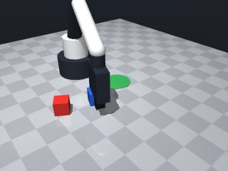
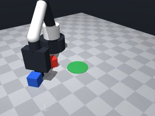
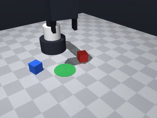
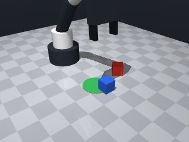
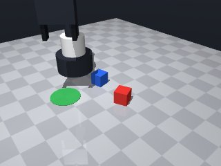
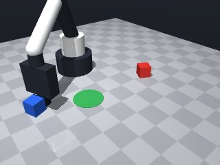
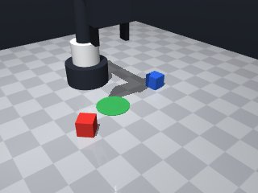

0 demonstrations · reward: gt · perception: real · 8 practice episodes in 1 rounds
Safety layer: 0 halts, 0 clamps.
| role | model | calls | tokens in | tokens out | USD |
|---|---|---|---|---|---|
| coder | nvidia/Nemotron-3-Ultra-550b-a55b | 1 | 1,670 | 1,395 | $0.0059 |
| summarizer | nvidia/Nemotron-3_5-Lightning | 0 | 0 | 0 | $0.0000 |
| compute | local | 108 s | $0.0000 | ||
| total | 1 | 1,670 | 1,395 | $0.0059 |
- First version of the skill for placing blue cube in green circle - Need to handle perception noise by re-observing after key actions - Move slowly (0.05-0.10 m/s) near objects for precision - Grasp at z=0.015 (cube center height), release at similar height over zone - Use yaw from cube observation for aligned grasp - Verify grasp and release with robot.holding() - Retry logic for robustness
--- round_0/skill.py +++ round_1/skill.py @@ -0,0 +1,110 @@ +import math + +def run(robot): + # Observe initial scene + obs = robot.observe() + + # Get blue cube and green zone (target) poses + blue_cube = obs["objects"].get("blue_cube") + target_zone = obs["fixtures"].get("target") + + if not blue_cube or not target_zone: + robot.log("Missing blue_cube or target zone") + return False + + cube_pos = blue_cube["pos"] + cube_yaw = blue_cube["yaw"] + zone_pos = target_zone["pos"] + zone_radius = target_zone["radius"] + + robot.log(f"Cube at {cube_pos}, yaw={cube_yaw:.3f}") + robot.log(f"Zone at {zone_pos}, radius={zone_radius:.3f}") + + # --- GRASP PHASE --- + # Move above cube first (safe height) + above_cube = [cube_pos[0], cube_pos[1], 0.15] + try: + robot.move_to(*above_cube, speed=0.15) + except Exception as e: + robot.log(f"Failed to move above cube: {e}") + return False + + # Move down to grasp height (cube center at z=0.015) + grasp_pos = [cube_pos[0], cube_pos[1], 0.015] + try: + robot.move_to(*grasp_pos, yaw=cube_yaw, speed=0.05) + except Exception as e: + robot.log(f"Failed to move to grasp position: {e}") + return False + + # Grasp + robot.wait(0.2) + grasped = robot.grasp() + robot.wait(0.2) + + if not grasped or robot.holding() != "blue_cube": + robot.log("Grasp failed, retrying once") + # Retry: re-observe and try again + obs = robot.observe() + blue_cube = obs["objects"].get("blue_cube") + if blue_cube: + cube_pos = blue_cube["pos"] + cube_yaw = blue_cube["yaw"] + grasp_pos = [cube_pos[0], cube_pos[1], 0.015] + try: + robot.move_to(*grasp_pos, yaw=cube_yaw, speed=0.05) + robot.wait(0.2) + grasped = robot.grasp() + robot.wait(0.2) + except Exception as e: + robot.log(f"Retry grasp failed: {e}") + return False + + if not grasped or robot.holding() != "blue_cube": + robot.log("Grasp failed after retry") + return False + + robot.log("Successfully grasped blue cube") + + # Lift cube to safe transport height + try: + robot.move_to(cube_pos[0], cube_pos[1], 0.15, speed=0.10) + except Exception as e: + robot.log(f"Failed to lift cube: {e}") + return False + + # --- PLACE PHASE --- + # Move above target zone + above_zone = [zone_pos[0], zone_pos[1], 0.15] + try: + robot.move_to(*above_zone, speed=0.15) + except Exception as e: + robot.log(f"Failed to move above zone: {e}") + return False + + # Move down to release height (slightly above table) + release_pos = [zone_pos[0], zone_pos[1], 0.02] + try: + robot.move_to(*release_pos, speed=0.05) + except Exception as e: + robot.log(f"Failed to move to release position: {e}") + return False + + # Release + robot.release() + robot.wait(0.3) + + # Verify release + if robot.holding() is not None: + robot.log("Release failed, still holding") + return False + + robot.log("Successfully released blue cube in green zone") + + # Move away to clear view + try: + robot.move_to(zone_pos[0], zone_pos[1], 0.15, speed=0.10) + except Exception: + pass + + return True







import math
def run(robot):
# Observe initial scene
obs = robot.observe()
# Get blue cube and green zone (target) poses
blue_cube = obs["objects"].get("blue_cube")
target_zone = obs["fixtures"].get("target")
if not blue_cube or not target_zone:
robot.log("Missing blue_cube or target zone")
return False
cube_pos = blue_cube["pos"]
cube_yaw = blue_cube["yaw"]
zone_pos = target_zone["pos"]
zone_radius = target_zone["radius"]
robot.log(f"Cube at {cube_pos}, yaw={cube_yaw:.3f}")
robot.log(f"Zone at {zone_pos}, radius={zone_radius:.3f}")
# --- GRASP PHASE ---
# Move above cube first (safe height)
above_cube = [cube_pos[0], cube_pos[1], 0.15]
try:
robot.move_to(*above_cube, speed=0.15)
except Exception as e:
robot.log(f"Failed to move above cube: {e}")
return False
# Move down to grasp height (cube center at z=0.015)
grasp_pos = [cube_pos[0], cube_pos[1], 0.015]
try:
robot.move_to(*grasp_pos, yaw=cube_yaw, speed=0.05)
except Exception as e:
robot.log(f"Failed to move to grasp position: {e}")
return False
# Grasp
robot.wait(0.2)
grasped = robot.grasp()
robot.wait(0.2)
if not grasped or robot.holding() != "blue_cube":
robot.log("Grasp failed, retrying once")
# Retry: re-observe and try again
obs = robot.observe()
blue_cube = obs["objects"].get("blue_cube")
if blue_cube:
cube_pos = blue_cube["pos"]
cube_yaw = blue_cube["yaw"]
grasp_pos = [cube_pos[0], cube_pos[1], 0.015]
try:
robot.move_to(*grasp_pos, yaw=cube_yaw, speed=0.05)
robot.wait(0.2)
grasped = robot.grasp()
robot.wait(0.2)
except Exception as e:
robot.log(f"Retry grasp failed: {e}")
return False
if not grasped or robot.holding() != "blue_cube":
robot.log("Grasp failed after retry")
return False
robot.log("Successfully grasped blue cube")
# Lift cube to safe transport height
try:
robot.move_to(cube_pos[0], cube_pos[1], 0.15, speed=0.10)
except Exception as e:
robot.log(f"Failed to lift cube: {e}")
return False
# --- PLACE PHASE ---
# Move above target zone
above_zone = [zone_pos[0], zone_pos[1], 0.15]
try:
robot.move_to(*above_zone, speed=0.15)
except Exception as e:
robot.log(f"Failed to move above zone: {e}")
return False
# Move down to release height (slightly above table)
release_pos = [zone_pos[0], zone_pos[1], 0.02]
try:
robot.move_to(*release_pos, speed=0.05)
except Exception as e:
robot.log(f"Failed to move to release position: {e}")
return False
# Release
robot.release()
robot.wait(0.3)
# Verify release
if robot.holding() is not None:
robot.log("Release failed, still holding")
return False
robot.log("Successfully released blue cube in green zone")
# Move away to clear view
try:
robot.move_to(zone_pos[0], zone_pos[1], 0.15, speed=0.10)
except Exception:
pass
return True